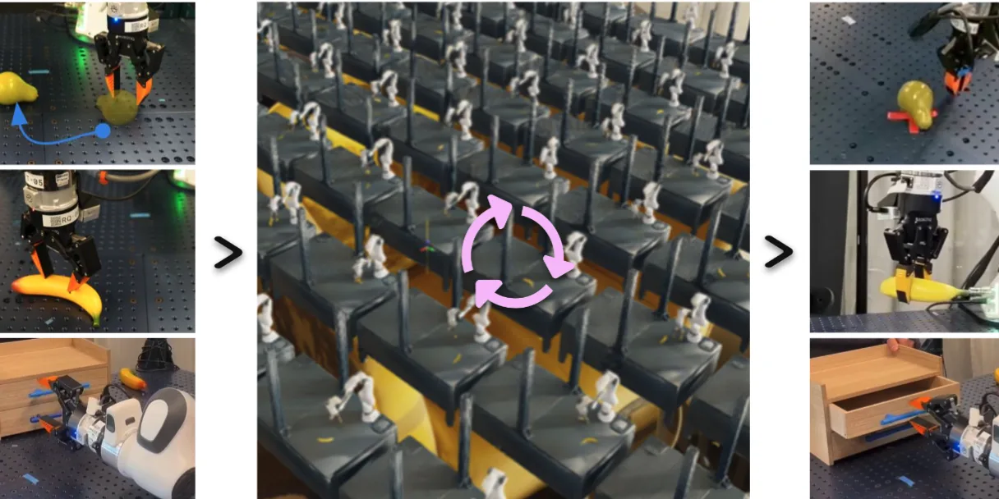
CoRL 2026
ExpertGen: Scalable Sim-to-Real Expert Policy Learning from Imperfect Behavior Priors
Scalable expert policy learning that transfers imperfect behavior priors from simulation to real robots.
Welcome! I am a final-year Ph.D. candidate in Computer Science at Purdue University, advised by Prof. Ahmed H. Qureshi. Previously, I received my M.S. in Robotics and B.A. in Computer Science from the University of Minnesota, where I worked with Prof. Nikolaos Papanikolopoulos.
My research focuses on robotic manipulation, with an emphasis on world-action models, generative policy steering, and soft-body manipulation.
Zixing is pronounced Zee-Shing.
Recent research and career news.
“Physics-Conditioned Grasping for Stable Tool Use” was accepted to IROS 2026.
“Efficient Sim-to-Real Transfer of World-Action Models from Synthetic Priors” was accepted to the CVPR 2026 EAI Workshop.
I joined Amazon Fauna Robotics as a summer intern.
“PPGuide: Steering Diffusion Policies with Performance Predictive Guidance” was accepted to ICRA 2026.
I joined the Robotics and AI Institute as a research intern.
I passed my Ph.D. preliminary exam and became a Ph.D. candidate.
“Dynamic Robot Tool Use with Vision Language Models” was accepted to the RSS 2025 R3 Workshop.
I joined Mitsubishi Electric Research Laboratories as a summer research intern.
“Implicit Physics-aware Policy for Dynamic Manipulation of Rigid Objects via Soft Body Tools” was accepted to ICRA 2025.
“DeRi-IGP” was accepted to IEEE Robotics and Automation Letters.
The short paper “DeRi-Bot” was accepted to the CoRL 2023 Learning for Soft Robots Workshop.
“DeRi-Bot” was accepted to IEEE Robotics and Automation Letters and presented at ICRA 2024.
“Efficient Q-Learning over Visit Frequency Maps” was accepted to IROS 2023.
Industry research in robotics and computer vision.
Robotics AS II Intern
Research Intern
Research Intern
Computer Vision Research Intern
12 publications

CoRL 2026
Scalable expert policy learning that transfers imperfect behavior priors from simulation to real robots.
CVPR 2026 EAI Workshop
The first zero-shot sim-to-real transfer of a world-action model for robotic manipulation, trained with synthetic demonstrations and no real-world demonstrations.
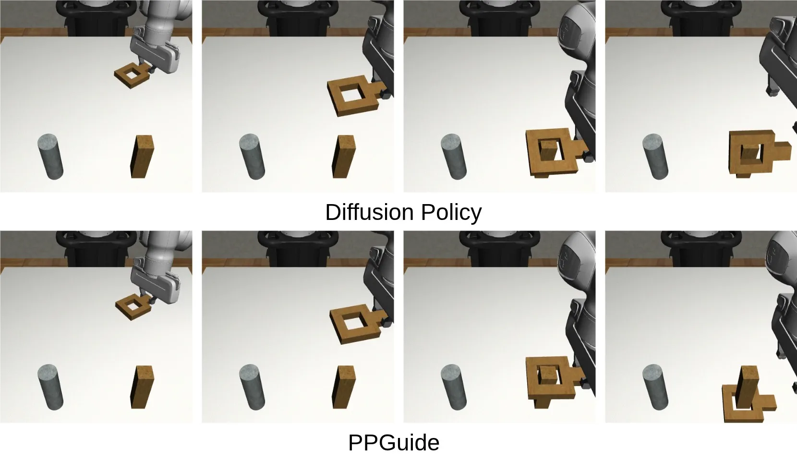
ICRA 2026
Inference-time steering for diffusion policies using learned predictions of task performance.
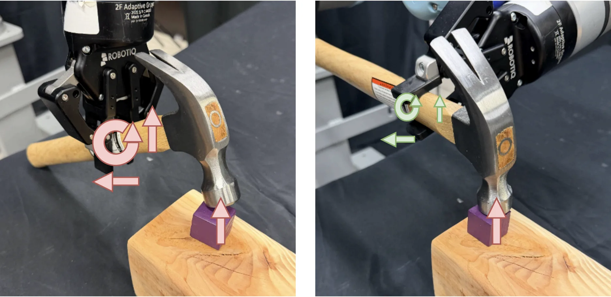
IROS 2026 · RSS 2025 R3 Workshop
Selecting stable grasps by conditioning robot tool use on the physical demands of the task.
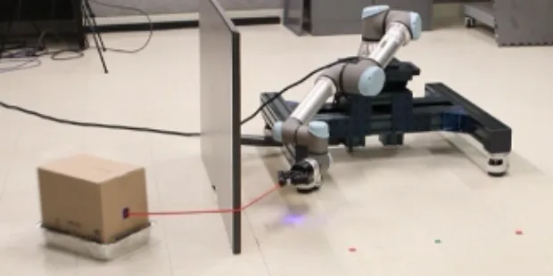
ICRA 2025
Learning dynamic manipulation policies that exploit the implicit physics of soft tools.
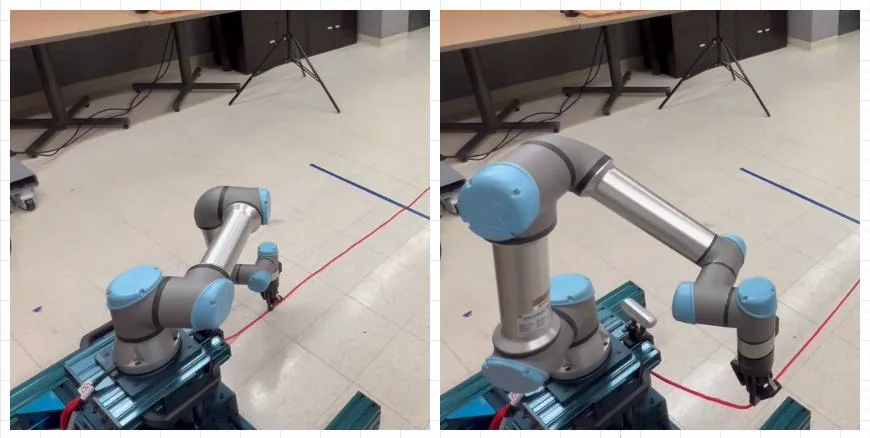
IEEE RA-L 2025
A grasp-pull framework for moving rigid objects indirectly through deformable objects.
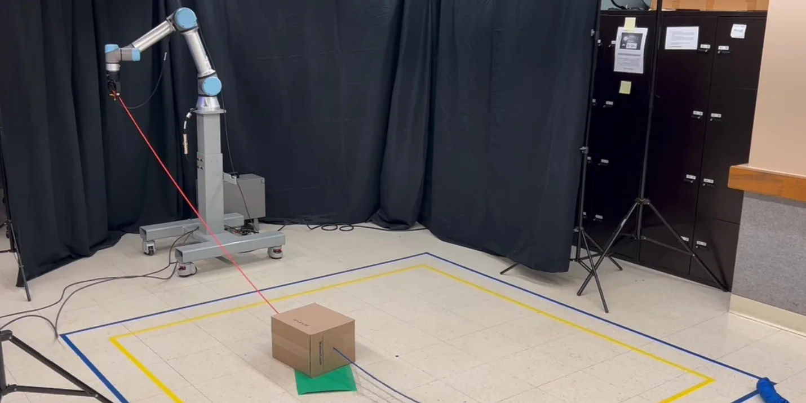
IEEE RA-L 2023 · ICRA 2024
Collaborative manipulation of rigid objects through learned interactions with deformable objects.
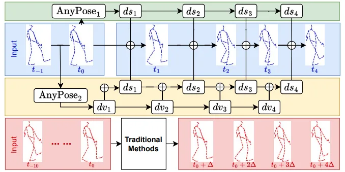
arXiv 2023
Continuous-time human pose forecasting with flexible prediction horizons.
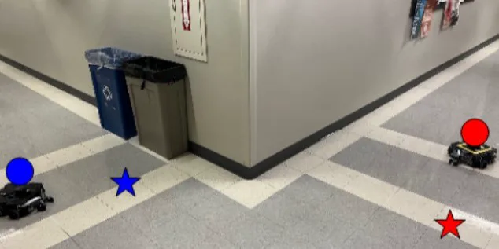
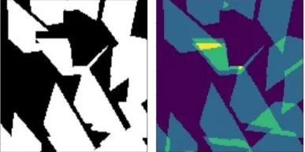
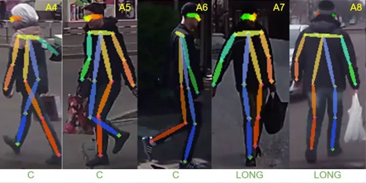
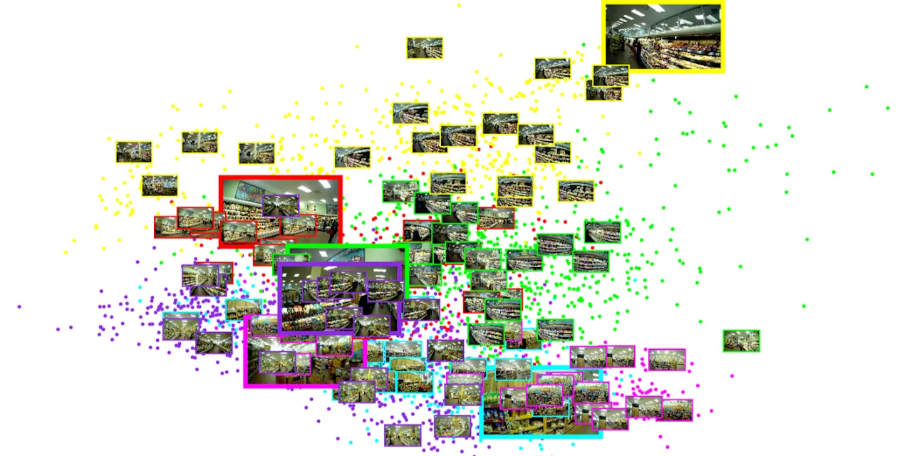
arXiv 2018
Egocentric cognitive mapping for representing and reasoning about an agent’s surroundings.
* Equal contribution · † Equal advising